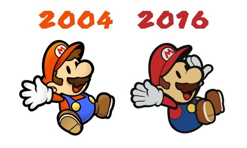

It begins...
Here we will analyze the art evolution in of the Paper Mario franchise. In addition to what changes, you may find just as interesting what does not! Why does change occur? Here are a few reasons: In more recent times it seems clear that Nintendo prefers overall 'consistent' character design in their main series and spin off games. Some fans may call this 'New Super Mario Bros' style, but the 2005 Nintendo DS game did not actually start this trend. To play Nintendo's advocate, these characters are around thirty years old and don't need too much experimentation with the design. Nintendo also now gives more characters the 'Toad' or 'Koopa' treatment. A generic enemy (any non-human aside from the Donkey Kong family) is presented as a species name composite character. (This is not new and goes back to Super Nintendo Entertainment System games but now there are more main-ish but generic characters to be found in newer games).
Now let's get to the thick of things. Some fans might wonder why even small amounts of departure is not allowed anymore in the Paper Mario games. Well about that..
"from the production of Paper Mario: Sticker Star onwards, we were no longer able to graphically represent individual characteristics, such as age, gender etc., in the Toad NPCs (non-playable characters), and so it has become that much more important to convey their personalities simply through text”
Straight from the horse's mouth! See, having characters for the sake of flavor, fleshing out the environment, etc, while they technically aren't important is an RPG element. Paper Mario after Super Paper Mario does not see itself as an RPG, rather a puzzle game with turn based battles. This is why when RPG elements do come into play, they use idiosyncrasies. They don't let you be so precise with numbers, tell you explicitly about damage in numbers, host a proper bestiary, let you level up in a traditional way through experience and etc. Narrowing it down to character design, you may find that while Paper Mario and Paper Mario: The Thousand Year Door have a distinct difference from one game to another, the changes beyond that are more of an uncanny valley deal. Some changes you may not notice unless directly comparing the character models. This especially applies to the main characters.
Mario:
In 64 he has a simplified style to fit in with 'story book'. There are differences between his art and in game sprites. In TTYD he’s redesigned to look like how we think of Paper Mario today. SPM keeps that but it is a slightly sharper image. Sticker star changes his gloves and adds a felt like texture to him, but only in concept art. Color Splash adds the white outline. Mario's proportions are tweaked regarding hat and nose. It is worth nothing that he has new animations depending on the game, such as dancing in the newer games. There are some subtle tweaks. The outlines become only black in the modern games and things such as sharpness is tweaked. 'New' Paper Mario's animations are actually more choppy in the games intentionally.

| 
|
|---|
From left to right: General comparisons; The excellent concept art of Sticker Star; Paper Mario Color Splash in game and on the far right concept art making Mario a sticker.

|  |
|---|
From left to right: Front facing Mario models in which he manages to strike a different pose every time. It's rather impressive how they kept tweaking that; Mario being defeated poses; Mario afraid: TTYD vs CS.
Left: A big composite of Mario using official art. Right: Mario bracing for impact, tweaking the design a touch. Let's give a round of applause for the TTYD remake sneaking in here.

Above: A highly specific sprite you wouldn't get in older games.
Luigi: His design cycle is just like Mario’s, though I wish I had something to actually show it. Obviously he has more sprites in a game like Super Paper Mario rather than say, Sticker Star.

Peach: A close story to Mario. Her first design gives her more orange looking hair and is of a totally different style. In TTYD we get her design from then on basically. Later we get small differences in dress for example, or lipstick oddly. Ignore the folded origami version. Note that her modern design doesn't have a back sprite until Color Splash.
Bowser: He has less changes spanning across all the games. He was pretty stylized from the start with a consistent appearance until Sticker Star and Color Splash added detail to his spikes. His posture can be oddly inconsistent however. Paper Jam however the spin off reverts to his old look surprisingly, and yes that game is post-old Paper Mario so I wonder why they did that.
Goomba: Stylized in PM64 and cleaned up just a bit for TTYD and SPM. SS darkens their skin, thins out their eyebrows to match 3D renders of the mushroom enemies and doesn’t exaggerate the eyes as much.
Paragoomba: Same, well... There's another row of feathers like the 3D models have.
Koopa: Ahh! My eyes. Sorry, I was dazed for a moment because I lost my shades. In all fairness, the glasses in the older games meant that they were ‘bad’ koopas, or in SPM case, the ones that worked for Count Bleck. Upon closer inspection, the Sticker Star and onward keeps the body the same, but redraws the head to be a little more on model. It's less obvious than the Hammer Bro below, but still there.

Dry bones: This is where things get drastic. The completely stylized Dry bones is changed to a design that pretty much perfectly resembles their 3D game render.
Hammer bro, boomerang bro, fire bro: Another casualty of the 'NSMBization'. Their snouts are shortened like their 3D versions. For Hammer bro the color of his helmet is made to match. Their eyes are less cartoony and they just seem a bit more serious.
Lakitu: Stays very very close. Suspiciously so! I don’t trust those jerks!
Magikoopa/ Kamek: Remains close. Remember that SS has no magikoopa enemy but Kamek, except Kamek has always appeared to be a generic blue magikoopa. (And yes in Japan Kamek and Magikoopa can be synonymous.)
Buzzy beetle: Another drastic one with a distinctive Paper Mario only style that was stripped away in Sticker Star to look just like NSMB. It was always a little strange that the old design as one toe nail on the entire foot..
Spiny: Just like above.
Spike top: Again like above.
Clubba/ Spike: Clubbas are in the older games but the newer only have Spike. We can’t make a comparison yet.
Shy guy and variants: Nearly the same but you can see changes in proportion regarding their garb and also the features of their mask.
Bob-omb: Strikingly stays the same!
Bullet Bill: Loses some cartoony features like larger eyes and given more detail around the arm.
Chain Chomp: Remains close enough, just less exaggerated.
Swooper: Literally stays the same.

Blooper: Literally stays the same, because his design just happened to already be NSMBish.
Cheep-cheep: Remains close enough.
Pokey: Loses exclusive ‘ghoulish’ Paper Mario style for their modern ‘chippy’ 3D design.
Piranha plant: Almost the same except detail on the leaves. Also whiter teeth, so someone gifted it some dental care at some point.

Fuzzy: Remains close enough, including the crooked eyes. (This is worth noting because other enemies with strabismus like Whomps have that design element stripped in modern times.)
Boo: Loses exclusive and stylized Paper Mario style for what’s basically a 2D version of Boo’s modern 3D sprite.
Ninji: Close but less cartoony.
Rocky wrench: A comparison here isn’t exact but notice that they lose the distinctive Paper Mario glasses. However the style is noticeably cartoony still.
Wiggler: A story you’ve heard before. He sheds the stylization to look straight out of NSMB.
My commentary in text. NOT created by me.

| 
|
|---|
If a character that is a toad is special in some way, they will usually have a different colored cap other than red and/or the mildest accessory such as glasses, or a hat on top of their toad hat.(This is worth clarifying as in older Paper Mario games the toad hats would be modified much more.) There will be no gender markers either. They will not normally have a unique name other than a title, but there are exceptions we will cover:
Main partners: Let's get a large thing out of the way immediately. The main partners ARE allowed a unique appearance but of a basic nature and not of an enemy species like in older Paper Mario. Kersti is of course a sticker. Huey is a 3D normal object initially but transforms into a paper character like the rest. Olivia is paper, albeit origami but still. Other partners in modern games will be covered below.

Forebear and Steward (Sticker Star):The Forebear toad previously owned The Enigmansion and the ski lift. He is in greyscale because of the interesting way you make him come of life from a portrait. The Steward owns the haunted mansion currently. He is a pink capped toad. Both characters are posh like and proper.
Traveling Toad (Sticker Star): While his appearance is just a red toad, his story is of some interest. He travels around throughout the game and consequently gets in trouble a lot. Each time he's saved he writes a postcard to his 'Bud' where he embellishes some details, not unlike what Luigi does in TTYD.
Other Toads (Sticker Star):One toad 'Swindler Toad' is a con-artist toad that will rip you off on an expensive Poison Mushroom. Origami King later reuses this idea with a Monty Mole selling an important object. In this game however this comes off a bit out of character for a toad. 'Crybaby Toad' is exactly that. A green toad Mario must assist via an escort mission. 'Sling-a-Thing Toad' is purple and runs the Thing Sticker creating giant board thingy. 'Shady Toad' is likely the same character. he sells you Things at a price so that you don't have to revisit levels. The game treats it like a black market deal.
Wiggler/ Flutter (Sticker Star):Wiggler is a main character for World 3 of this game. Kamek brutally rips his body segments apart and that becomes the focus of that chapter. He later becomes a Flutter. His character is nice enough, he just suffers from generic species name character syndrome. At least he has some neat stuff in his house.

Rescue Squad (Color Splash): Semi-prominent characters in that game who do various task for Mario after of course you rescue THEM first. They are color coded red, blue, yellow, green, and purple and they have a Squad Chief with a different attire. They have unique outfits with a scarf and the Chief looks like a normal toad but with sunglasses and a clipboard in his hands. There is an Apprentice Toad who is normal but with a pink scarf because he hasn't earned the full outfit yet. Concept art shows that they could have been normal toads with stars glued to their heads, so at least we got something better than that. These characters have their 'character' through their dialogue primarily.
Legendary Captain (Color Splash): A yellow toad with a pirate hat on his toad hat and a sword. He is the greatest captain ever but we all know that's wrong because Captain Toad is the best ever. Alas he's not a Paper Mario character so no more on that.. His character is entertaining enough but I just don't get how old he's supposed to be. Origami King would do something weird like this again, but more on that below.
Violet Passage Captain (Color Splash): The red toad that idolizes the above. He has a less impressive pirate hat atop his head and a sword. He acts like a typical pirate albeit with some work to do here and there.
Piper and friends: Purp, Redd, Greenie, Yella, Bloo (Color Splash): Named characters! Granted their appearance is drab but this kind of surprised me on my first play through. They are old friends of the patooie plant named Piper (who is also lacking any unique characteristics) who long to see him again. Eventually they do with the twist being that Piper is a patooie and not a toad.
Prof. Kinopio and Princess (Color Splash): Another named character. Yes it translates to 'toad' regardless but we're counting it. He is simply a yellow toad, without even a lab coat or something stereotypical. He however has a pet named Princess who is a chain-chomp with a bow. (Origami King borrows a gag like this.) Princess is notably not a flat paper character due to Kamek's meddling.

Five Fun Guys (Color Splash): Green identical quintuplets who aren't blood related however and call themselves insufferable and irritating at one point. Oh and a infamous event that ends with a 'gate' is mentioned in their presence. At least they dance.
Toads with title names (Color Splash and Origami King): 'Lighthouse Keeper' is a purple toad with sunglasses and owns the lighthouse on LIghthouse Island. Oh and he's radical. The 'Sunset Express conductor' wears a dirty work uniform which is somewhat distinguishing. The 'Tangerino Grill Chef' is a yellow toad with a chef had added to his toad hat. In Origami King his exact sprite it seems is reused and called 'Chef Kinopio'. 'Toadmaster General' may seem to be a Parakarry replacement in Color Splash but actually he is the one stuffed into the mail and shipped off. Brutal. He's okay later of course. 'Card Connoisseur Toad' is purple and has again those thick glasses. He is proper speaking. 'Deep Cuts Toad' is purple and doesn't show his face. 'Guide Toad' is a green toad that does just that. He carries a matching green flag and book. 'Green Energy Plant researcher' is another ostensibly brainy green toad.
'Toad Researcher' in Origami King runs the Sensor Lab. He is a yellow toad with a professor's attire with a wrench in his hand. 'DJ Toad' in Origami King is a purple toad DJ with sunglasses. He is 'hip' and cool even when stuck in the bad situation he's in with the Hole Punch and the faceless toad zombies. The 'Mustard Cafe Chef' is a green toad with sunglasses who is a bit of a slacker but can cook. 'Love Toad' in Origami King is just a red toad. He gives hints of MAX UP Hearts, thus the love part. Kind of. 'Peddler Toad' in Color Splash is a purple toad that restocks the Tangerino Grill. He will assist Mario if you are horribly failing that Steak challenge. We wouldn't blame you. 'Wringer' is a red toad that that sells Things to you in Color Splash. 'Informant Snifit' is a helpful enemy NPC in Color Splash that hangs out outside the Cobalt Base. He will give you some cards that may be useful for the sadistic game show section ahead.

Rock Paper Wizard: The final boss of the Roshambo Temple or he would be if something more than random number generating was occurring. He wears stylish white glasses and a goofy hand shaped hat with a white cape. In concept art he may have been some sort of duplighost which is more interesting but in their defense not exactly theme fitting.
Tea Party Toads (Color Splash): These are six toads friends who are deceased in current times and haunts a hotel that's also suffering a time loop. Actually kind of cool. Their appearance isn't anything special aside from one wearing the round thick glasses several characters also wear.

Chosen Toads: Justice Toad, Mountain Sage, Surfing Kinopio (Color Splash): Three toads, red, yellow, and blue who are actually like..spirits or something? They have special powers and are also the literal keys to open the gate to Crimson Tower. You can them again at points with new dialogue for how far you've made it. I kind of liked their characters and the dramatic happenings around them. In concept art they may have been all red and with different looking keys on their heads.
Bob-omb 'Bobby'(Origami King): A bob-omb with memory loss at the start. Without revealing too much there is more than meets the eye with him, but not exactly with his design. He's just a bomb.
Captain T. Ode (Origami King): An ancient character that once did something very daring and was punished for it. You unthaw him later and he's just fine apparently and much more mellow. He is a red toad with a really fancy jacket. Fun fact: in other languages his name is just 'Captain Toad' just like the other Captain Toad with the brigade.
Sea Captain Toad (Origami King): Yes we're really doing this with the names. He is a blue naval toad with a white admiral hat and turquoise scarf.
Earth Vellumental Temple Curator (Origami King): A green toad with sunglasses on, likely to hide the guilt that he's running a sort of tourist trap. He is identical to the Mustard Cafe Chef in Color Splash who also was of questionable nature. There must be something about green toads with sunglasses.
Kancho Kinopio (Origami King): A yellow toad with glasses who runs the Musee Champignon in Toad Town. Not more to say.

Ol' Grandsappy and Sap Sisters (Origami King): Original characters, talking trees that Mario encounter at the very start. The victim of toads with an ax, you have to help restore him to his former glory. He and the other trees can sing as well.
Origami Craftsman (Origami King): A green toad with a blue shirt and yellow overalls but there's more to it than that. Much more actually. While a kind person, his desire to bring one of is papercraft creations to life with a forbidden technique starts the plot of the game.
Oarsman and Shogun Studios cast (Origami King): The Oarsman is a blue toad with a Chinese straw hat and robe. He assists you with the Eddy River. Several kinds of Mario species wear traditional Asian garb at the Shogun Studios attraction.

Enemy groups (Color Splash and Origami King): 'Penabros' are five 'Juggler Bros' (or just Hammer Bros and Boomerang Bros) who ambush Mario in Mossrock Theater. They wear large circus like red and yellow top hats. They behave like true performers, with a bow upon defeat. 'Shai Guyz' is a group of shy guys in Color Splash.

Professor Toad (Origami King): A partner for Mario, he is an intelligent yellow toad in an explorer's outfit. As a college professor and archaeologist he assists you in the Sandpaper Desert and has a shovel that that unearth items or attack in battles. He's one of the closest things to an old-school toad design I feel.
Sencho Kinopio (Origami King): Another nautical toad but of a more classy nature as the captain of the Princess Peach ship. He is a purple toad with a white suit with a white captain's hat.
Feelin'Fungi: Joy, Anger, Pathos, Humor (Origami King, not pictured): Sort of like the Five Fun Guys from Color Splash. All green toads but with a 'name' that also describes their emotion. Collecting all of them works as a mission for the island they're on. The most notable thing is that Joy forces you to help but.. characters do that a lot so..
Shangri-Spa (Origami King): The angel like toad inhabitants here seem nice but are actually forcing Bowser's minions into harsh labor when Mario's back is turned. Sometimes literally. This is another example I feel of what could be an oldschool design.
Host Snifit (Sticker Star, Color Splash): Just a snifit but with a pink bow so he can look presentable while attempting to kill you in a game show. Twice!
Emcee Shy Guy (Origami King): Shy Guy game host following the steps of the Snifit or Whiffit host. He wears a pink bow, the typical small accessory allowed.
Here's more Paper Mario articles